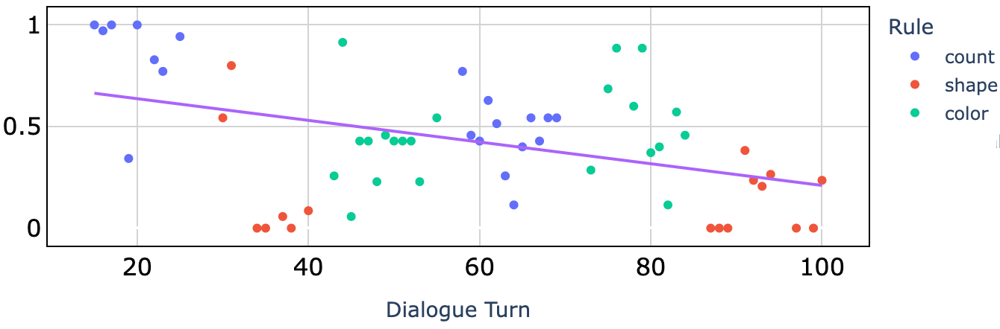

[Executive Function] (Cognitive Flexibility) WCST
All models tested have sub-stantially lower accuracy than humans (70 - 80%).
Unlike humans, models do not appear to do very well adapting to changing sorting rules:
we find no correlation between model accuracy and number of turns exposed to a given rule.

-
Accuracy for each turn in the dialogue for Qwen2-72B. Colors indicate underlying sorting rule for
that turn. The models do not adapt well to the implicit rule changes, and the accuracy declines as
the dialogue continues.